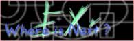
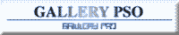

|
| バナー（HPタイトル） |
管理者(敬称略） |
主な内容 |
|
| 第２回更新分 |

PSO Worship |
綺真友栄 |
・創作
・CG
・イラスト |
| メッセージ |
当サイトはイラスト・４コママンガ・小説やキャプチャといった、エンタテインメント系ＰＳＯサイトを目指しています。他にもＰＳＯ川柳ＢＢＳ、イベント情報もありますのでぜひお越し下さい。ｖｅｒ．２情報も随時アップしてゆきます。 |
|

PSOのぺーじ |
MIA |
・創作
・CG
・イラスト |
| メッセージ |
PSOキャラクターのデフォルメアイコンを配布しています。掲示板やHPの彩りにどうぞ♪
アイコンサイズなので、デスクトップにも使用できます?（＾＾） |
|

らぐおる調査日誌 |
でぎけろ |
・創作
・CG
・イラスト |
| メッセージ |
ラグオルでの分身メルのなりきり調査日誌（ほぼ毎日書いてます）としょぼぼなＣＧ置いてます。心と時間に余裕のある方ちょっと覗いてみませ
んか？ |
|

軌道幻影団（きどうげんえいだん） |
GRIf（グリフ） |
・創作
・CG
・イラスト |
| メッセージ |
壁紙やイラスト、フリーアイコン素材などを公開しています。更新スピードはノーマルのブーマ並みですが一度のぞいてみてくださいませ。 |
|

めろんぱんふぁくとりぃ |
めちめち |
・創作小説 |
| メッセージ |
小説、プレイ日記など行っているHPです☆ チーム：ＦｉｃｉｔｉｏｎＺへのリンクもありますのでお気軽におこしください☆ |
|

POWER FORCE |
英鈴 |
・創作
・CG
・イラスト |
| メッセージ |
攻略等はありませんが、コスプレやイラスト等の創作活動中心に運営しています！また、一緒に冒険した印象深いプレイヤーの方のキャライラストも描いています。あなたのキャラも紹介されるかも！ |
|

Aces High (エイシズハイ) |
Mebius(メビウス) |
・創作
・CG
・イラスト |
| メッセージ |
みなさんこんにちは。当サイト、Aces
High(エイシズハイ)は、PSO関係の小説、イラストの掲載中心です。
攻略の類はとても苦手なので現在ありませんが(^^;）ご要望がありましたら取り組んでみたいと思ってます。
みなさんよろしくお願いしますー！ |
|

ＰＳＯ ＡＰＳＡＲＡＳ |
ＲＯＫＩ |
・４コマ漫画
・ＣＧ |
| メッセージ |
Ren_Kusanagiという青フォマールの冒険を中心としたＰＳＯ４コマ漫画をメインに掲載しております。みなさんに喜んでいただけるお話を掲載しておりますので、是非とも一度お立ち寄りくださいね♪ |
|

EXｓZONE |
maru |
・創作
・CG
・イラスト |
| メッセージ |
ＰＳＯにはまりまくってＨＰにコーナーを創ってしまいました！！
ＰＳＯ日記、レアアイテムの情報、専用掲示板などありますが、一番力を入れてるのは「冒険者達」のコーナーです。
私が出会った様々な冒険者達をイラスト付きで紹介しています！！もしよかったら一度訪ねてみてください。お待ちしてます（＾＾） |
|

道場「王家の拳」 |
JUAN RICO |
・創作 |
| メッセージ |
ブラックカラーのRAｃａｓｔ【ＪＵＡＮ
ＲＩＣＯ】です。
本来は某メーリングゲームから発生したHPですが、その後のお付き合いからPSOファンが多い事に気付き、既に編成されていた「TEAMOKIRAKU」に参加させて頂きました。今や「オヤヂギャグ道場」「お笑い漫画道場」に
成り果てた我がHPだったのですが、仲間の「ロボが描かれた創作話が無い！」の声に奮起し、＜書斎＞の中で『甲殻歩兵物語』なるものをスタートさせました。
実際のネット体験談を元にしたJUANロボの成長記です。稚拙な文面ではありますが、お暇な方は是非覗きに来て下さいませ。 |
|

らぶ・らぶ |
桜花(おうか) |
・創作 |
| メッセージ |
３D酔いとドライアイに悩まされ続けてる(笑)管理人の創作小説がメインです。主人公は管理人の１stキャラ、その他メインキャラも実在するキャラなのでオンラインで会えるかもしれません。 |
|

Ver.PSO FAN SITE |
譲刃竜技
夕凪琴音 |
・創作
・CG
・イラスト |
| メッセージ |
「見て楽しむPSO」をコンセプトに、それぞれのキャラクターを描いたイラストやプレー中に撮影した様々な写真、破天荒な主人公達の笑える小説といったコーナーをそろえています。 |
|

こまいぬ亭＠ＰＳＯ |
こまいぬ |
・創作
・CG
・イラスト |
| メッセージ |
創作は、そのぉぉ、こまいぬ作なため・・・な内容です（ＴＴ）
それはそれとしまして、こまいぬ亭ではPSO四コマを掲載なされているHPさまのリンク集も作成しています。リンク数はまだあまり多くはないのですが、これからＰＳＯ四コマをさがそうかなといった皆様のお役にたてれば幸いです（＿
＿） |
|
| 第１回更新分 |

EXｓZONE |
桐碕 凪 |
・総合ファンページ
・創作ノベル |
| メッセージ |
PSOの総合ファンページです。創作ノベルの連載もやってます。
また、鍵系チーム「はちみつくまさん」との共有BBSがあるので興味のある方は是非！ |
|
ファンタシー スター
コミュニケーションズ |
shinachiku
(しなちく) |
・４コマまんが
・BBS
・シンボルチャット |
| メッセージ |
「shinachiku」 と書いて、そのまま
「しなちく」 と読みます。PSOにすっかりはまってしまっているPSO信者(？)の一人です。
「PHANTASY STAR COMMUNICATIONS」 では、４コマまんがを中心に、見せるサイト創りをモットーとして制作運営しています。詳細なデータなどは掲載していませんが、PSOをやっている人には”共感”を、そうでない人には“親近感”を与えられる、そんなページになればと思っています。
是非一度、お立寄り下さい。 |
|
ラピスの大自然のおしおきです！ |
水無月 瑠璃＆
隣野みゆき |
・ＰＳＯ交友掲示板
・外伝小説
・イラスト(制作中) |
|
| メッセージ |
当サイト「ギルドパラベラム」は小説やデータがメインのサイトです。
小説には設定さえ送っていただければ皆様のキャラクターを登場させます〜。そのほかにはアイテムのトレードなども受け付けますし、キリ番をゲットされた方にはプレゼントも・・・とにかく一度来てみてください！ |
|

GALLERY PSO |
ななせ |
・日記
・創作
・イラスト |
| メッセージ |
イラスト、Flash・GIFアニメーション等、PSO大好きな皆様の力作揃いです。作品を
通じて皆様と交流を深めてゆければと思っております。 |
|